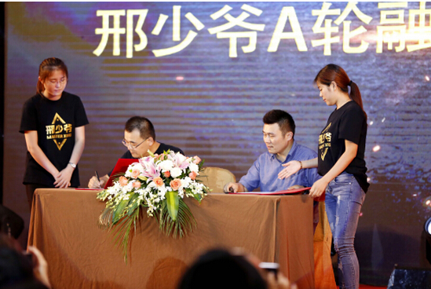
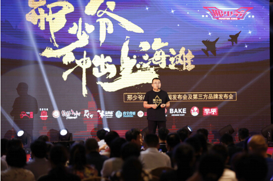
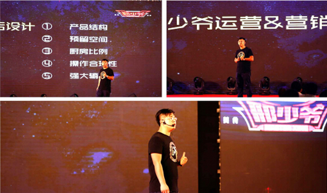

邢少爷A轮再融资5000万 美食航母布局出海
来源：中国网
如果要问今年上半年在上海滩餐饮圈引发话题最多的是哪个餐饮品牌?大概非邢少爷莫属了。
邢少爷4月8日开业，主打产品秦镇米皮和老潼关肉夹馍以及特色软饮酸角汁等美食顷刻间便风靡大上海;开店之前，邢少爷即凭借其创业团队的demo获得1000万的天使轮投资;开业一个月后，因食客的疯狂追捧及商业模式的初步检验，又引起资本机构的极大关注，多家投资机构陆续与邢少爷进行了接触，并表达了入股的意愿。
目前，位于上海临空商务区凌空SOHO的邢少爷旗舰门店运营稳定，各色全新的爆款美食也在逐步推出，新的追捧热点正在形成，邢少爷品牌的价值和影响力在不到三个月时间里得到稳步提升。
7月7日，邢少爷举行新闻发布会，突然公布了一条重磅消息，有如一枚炸弹，再次震动了沪上餐饮行业：创始人邢志远宣布邢少爷完成5000万的A轮融资，品牌估值达到2.5亿，此轮由慕槿投资领投。邢志远同时宣布，面向全国30座主要城市招募邢少爷品牌合伙人，加速布局邢少爷品牌“冲出上海滩”，联合合伙人共同推进美食航母的快速成型。
在此次战略投资新闻发布会上，邢少爷新品发布及与第三方品牌对接签约同时举行，多家航母护卫店正式签约入驻。邢少爷创业团队还邀请了数十位餐饮行业大咖与一批热门网红参加品鉴会，并全程进行了直播。发布会上新推出的第三方品牌的爆款美食，也均受到与会老饕们的普遍好评。
发布会结束后，就邢少爷开业以来的快速发展，以及本轮融资后，邢少爷的品牌推进、布局构想等问题，创始人邢志远接受了记者的采访。
三个月两次融资 意欲何为
Q：邢总，首先祝贺这次新闻发布会的成功举办。这次发布会实际上集中发布了一系列的消息，最令人关注的还是邢少爷品牌完成了A轮融资，邢少爷刚开业三个月，为什么这么快就进行融资?是因为天使轮的钱烧完了?
A：谢谢。这次新闻发布会确实包含了几个内容，不仅公布了完成A轮融资的消息，还公布了航母护卫店的开启，同时还进行了新品的发布与品鉴及第三方品牌对接签约，以及发布了合伙人招募计划等。你关注到的融资问题，我可以告诉你，截至目前，邢少爷只有一家用于商业模式检验的旗舰店，扩张还没有开始，天使轮融资都还没有花完呢，怎么可能缺钱?
“邢少爷”品牌创立之初，我们就立志要将其打造成为汇聚各地特色美食的航母战斗群，让更多的美食爱好者能够更方便地品尝到各类爆款美食，这是我们的初心和理想。那要成就“航母”战斗群这个目标，我们创造性地制定了1+N的市场布局模式，即每一个地区以一家直营航母旗舰店带动周边N家中型品牌护卫店进行布局，那么这个布局在下半年会成为我们的重点，此轮融资的目的也在于此。
另外，对于我们来说是融资;而对于投资机构来说，则是他们对看好的项目的提前布局，他们希望更早地以较低的价格介入到项目和品牌中来。说穿了，是投资机构高度认同我们的模式，而我们也有引入战略资源的需要，所以在开业仅仅一个月的时候，就有多家机构开始表示了兴趣;到现在三个月了，无论商业模式还是盈利模式都更加清晰，投资机构的再次注资也只是水到渠成的事情。
Q：正如您所说，邢少爷才开业三个月，资本就再次进入，您会不会担心股权稀释得太快，对企业发展决策产生一定的副作用?
A：我们不会担心这些，我们创立邢少爷品牌，初心不在于最终拥有多少股权，而是希望做一件有意义有情怀的事情。股权不是重点，阿里巴巴那么大，马云的股份也不过7%左右，我们是希望把邢少爷这个品牌做强，把蛋糕做大，这就要把精力用在正确的地方。况且此轮融资后，我们的管理层依然能够实现控股，对未来决策不会产生影响。
Q：那么这次融资的钱将用于哪些方面?
A：目前，邢少爷产品输出端口的打造已经日趋完善，航母出海走向全国以后，产品质量的标准化、物流配送的高效率以及品牌的市场竞争力都很大程度上与完善的供应链系统相关。基于这些，此次A轮融的资金将主要用于收购具有核心竞争力的平台工厂，打造完善的供应链系统等方面。此外，在未来半年，邢少爷将加快走出上海的步伐，计划在上海以外地区再开设5-8家直营旗舰门店，同时带动旗舰门店周边40-50家中等规模餐饮爆款品牌协同发展，实现多个航母编队，多点开花，快速产生规模效应。
30个城市合伙人计划 狂飙突进
Q：您在发布会上提到了30个城市合伙人招募，这是一个什么样的计划?
A：事业要做大，需要团结一切具有相同理念的人。我们将面向全国选择30个城市，在每个城市招募选定一位合伙人作为邢少爷品牌在每个城市管理合伙人，共同打造每个城市的航母旗舰店、护卫店。这样的话，集众人智慧和力量，实现邢少爷的扩张速度加倍。
在刚刚的发布会上，你可以看到，已经有很多第三方的美食品牌与邢少爷签约，他们作为各地的护卫舰，需要搭上我们的航母，冲出上海，走向全国。这些品牌主体，就有可能成为我们的合伙人。在总部统一的战略布局下，邢少爷带他们走向全国，而他们代邢少爷进行地区性的管理与运营
Q：那么邢少爷对于这些合伙人的遴选标准是什么?
A：事实上，在启动这个计划之前，已经有多家餐饮品牌与我们取得联系，部分品牌的谈判也已经完成。我们希望那些热爱餐饮行业，热衷餐饮事业，具有一定当地餐饮资源，同时拥有一定量级可以投入品牌门店运营资金实力的未来合伙人与邢少爷一起打造属于我们大家的“美食航母”。另外，在互联网时代，如果对互联网餐饮有自己的独到理解，或者已经拥有比较丰富的互联网餐饮经验，那么他们就是我们正在寻找的弥足珍贵的合伙人选。众人拾柴火焰高。我和我们的投资人一样，对下半年邢少爷的发展与布局充满信心。
Q：对于加入合伙人计划的品牌，邢少爷将提供他们哪些支持?
A：邢少爷的产品是高标准严要求的，追求极致，汇聚爆品是我们的基本态度。加入邢少爷合伙人计划，在供应链方面，合伙人将可以利用邢少爷强大的供应链平台，彻底告别传统餐厅手工作坊式的操作模式，使产品品质得到有效把控，同时为门店提高效率，降低成本。
其次，邢少爷的爆款美食研发中心，将为合伙人提供最新爆款美食的快速研发。简单说，市场需要什么样的产品，邢少爷美食研发中心即可以最快的速度研发出来并推向市场，实现互联网+时代的定制任务。
第三，互联网时代，跨界营销成为一条独特之路。邢少爷拥有一支优秀的跨界营销团队——宇宙营销局。这是一支经历过传统餐饮业洗礼，在互联网时代凤凰涅槃的，兼具传统餐饮业经验和新媒体实操的专业团队。所以在跨界传播方面，通过我们越来越强的品牌影响力，邢少爷将助力合伙人为其运营管理的门店和爆款美食获得巨大的新增流量。
互联网+情怀 跨界传播
Q:在跨界传播，为合伙人品牌与门店引流方面，邢少爷的有哪些具体手段?
A: 互联网时代，传播变得比以往任何时代都更加便捷，所以邢少爷在这个工具的使用上，是积累了很多经验的。首先，在硬件上，邢少爷的营销平台组建了专门的媒体运营中心，拥有专业录影棚，专职导演、统筹、摄像、文案、美术、发行甚至模特和演员，会定期根据合伙人要求录制专业视频，及时宣传爆款产品。
在软件上，运营平台通过与多家电视、视频网站、门户网站、平面媒体的签约合作，加上平台已经拥有的微博、微信、公众号、论坛、贴吧等新媒体阵地，将合伙人以及爆款产品的专业视频、人物采访、品牌理念、活动直播甚至图文软广等进行集中性的全媒体覆盖，从而在最短的时间内形成某种轰动效果，引起关注，导入流量。
目前，宇宙营销局拥有的公众号将近800个，粉丝量超过1000万。每一款产品的发布，每一次必要的宣传，几乎毫无疑问地可以产生一次局部性的轰动效应。今天发布会上你看到的网红直播就是最直观的例子。
Q：餐饮行业流传一句话，餐饮创业是一场马拉松，说的是餐饮行业的链条很长，创业辛苦而艰难。是什么让您充满勇气，非要做这么大一个平台?
A：说实在的，我人生最初的职业是五星级酒店的大厨，对美食充满狂热的爱，为最多的食客提供最棒的美食享受是我不曾改变的梦想。餐饮行业的创业确实不容易，但是人么，总要有些情怀的。中国上下五千年，美食文化绝对博大精深，许多美食经数千年流传而不衰，比如邢少爷开业试点的秦镇米皮和老潼关肉夹馍在秦朝就有了。所以，作为餐饮人，我们有责任把这些美食及美食文化带给美食爱好者。虽然，邢少爷品牌进入公众视野才几个月，但由于模式创新，所以成长极快，食客追捧，资本青睐，这也让我们团队看到了市场的巨大需求，给了我们坚定前行的动力，今天的发布会就是我们“冲出上海滩”，开始展现我们梦想的新起点。
Q：作为创始人，为我们描绘下邢少爷的未来图景吧?
A：邢少爷能做到怎样，我们不去预测，但美食航母是我们的理想，把全世界一切有特色的小吃和美食尽可能多的汇聚到邢少爷品牌下，提供给所有美食爱好者是我们的永不衰竭的动力。在我们凌空SOHO旗舰店的玻璃门上有句话叫“少爷不是传说，美味终成传奇”，前半句说的是我们的态度，我们对美食的追求孜孜不倦，矢志不渝;后半句可能就是我们所期待的未来图景吧。